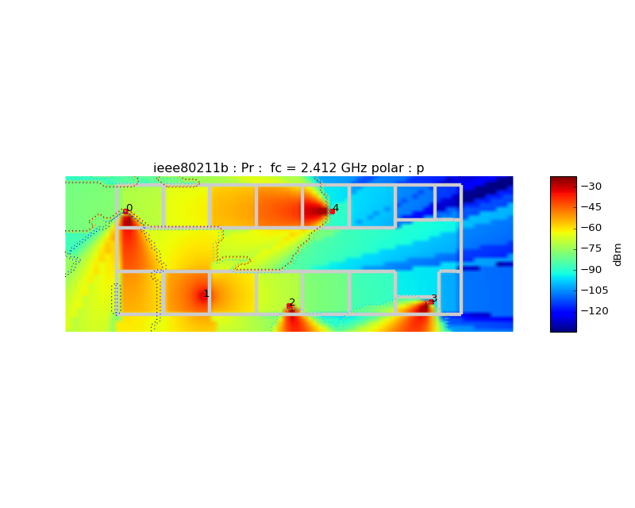
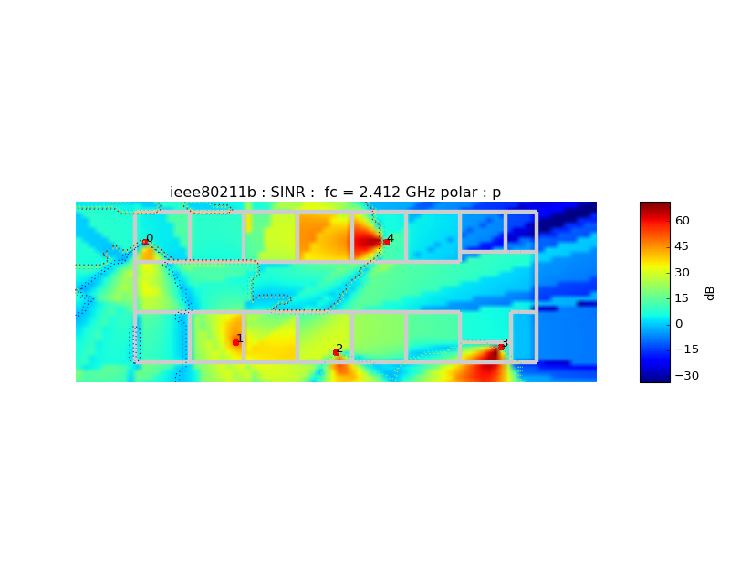

Coverage¶
-
class
pylayers.antprop.coverage.Coverage(_fileini='coverage.ini')¶ Bases:
pylayers.util.project.PyLayersHandle Layout Coverage
Attributes
show(**kwargs)show coverage All attributes are read from fileini ino the ini directory of the current project _fileini default coverage.ini L (a Layout) nx (number of point on x) ny (number of point on y) tx (transmitter position) txpe (transmitter power emmission level) na (number of access point) Methods
creategrid() create a uniform grid for evaluating losses cover() run the coverage calculation showPower() display the map of received power showLoss() display the map of losses Methods Summary
cover([sinr, snr, best])run the coverage calculation creategrid([mode, boundary, _fileini])create a grid evbestsv()determine the best server map evsinr()calculates sinr evsnr()calculates signal to noise ratio plot(**kwargs)show(**kwargs)show coverage where1()Unfinished : Not sure this is the right place (too specific) Methods Documentation
-
cover(sinr=True, snr=True, best=True)¶ run the coverage calculation
Parameters: sinr : boolean
snr : boolean
best : boolean
Notes
self.fGHz is an array, it means that Coverage is calculated at once for a whole set of frequencies. In practice, it would be the center frequency of a given standard channel.
This function is calling loss.Losst which calculates Losses along a straight path.
In a future implementation we will abstract the EM solver in order to make use of other calculation approaches as a full or partial Ray Tracing.
The following members variables are evaluated :
- freespace Loss @ fGHz PL() PathLoss (shoud be rename FS as free space) $
- prdbmo : Received power in dBm .. math:P_{rdBm} =P_{tdBm} - L_{odB}
- prdbmp : Received power in dBm .. math:P_{rdBm} =P_{tdBm} - L_{pdB}
- snro : SNR polar o (H)
- snrp : SNR polar p (H)
Examples
>>> from pylayers.antprop.coverage import * >>> C = Coverage() >>> C.cover() >>> f,a=C.show(typ='sinr',figsize=(10,8)) >>> plt.show()
(Source code, png, hires.png, pdf)

-
creategrid(mode='full', boundary=[], _fileini='')¶ create a grid
Parameters: full : boolean
default (True) use all the layout area
boundary : (xmin,ymin,xmax,ymax)
if full is False the boundary argument is used
-
evbestsv()¶ determine the best server map
Notes
C.bestsv
-
evsinr()¶ calculates sinr
-
evsnr()¶ calculates signal to noise ratio
-
plot(**kwargs)¶
-
show(**kwargs)¶ show coverage
Parameters: typ : string
‘pr’ | ‘sinr’ | ‘capacity’ | ‘loss’ | ‘best’ | ‘egd’
grid : boolean
polar : string
‘o’ | ‘p’
best : boolean
draw best server contour if True
f : int
frequency index
a : int
access point index (-1 all access point)
See also
Examples
>>> from pylayers.antprop.coverage import * >>> C = Coverage() >>> C.cover() >>> f,a = C.show(typ='pr',figsize=(10,8)) >>> plt.show()
(Source code, png, hires.png, pdf)
>>> f,a = C.show(typ='best',figsize=(10,8)) >>> plt.show()

>>> f,a = C.show(typ='loss',figsize=(10,8)) >>> plt.show()

>>> f,a = C.show(typ='sinr',figsize=(10,8)) >>> plt.show()

-
where1()¶ Unfinished : Not sure this is the right place (too specific)
-
{kind=link}
{kind=link}
{kind=link}
{kind=link}
{kind=link}
{kind=link}
{kind=link}
{kind=link}
{kind=link}
{kind=link}